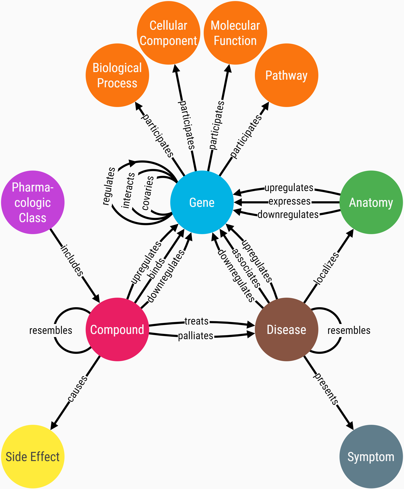

What's in Hetionet?
Hetionet combines information from 29 public databases into 11 types of
nodes and 24 types of edges. Together, this forms a hetnet with XX nodes and
XX edges. The schema below is the metagraph of Hetionet, showing the types
that comprise the network.

table
For example, the metagraph shows the 11 node types in Hetionet. Notice that
multiple types of edges can connect the same two nodes. For example, a
compound can have a relationship to a gene by binding its protein and/or by
upregulating it. Since the biological effect of binding versus upregulation
are very different, it's important that the network captures this
distinction.
Hetionet was created openly, with public discussion and feedback throughout
the process. First for each metanode, a standardized vocabulary was selected
to define the nodes (e.g. Entrez Gene for genes or Disease Ontology for
diseases). These vocabularies provide a common backbone of nodes to overlay
edges onto, while preventing redundant concepts from forming separate nodes.
Next, edges were extracted from omics-scale resources, converting
identifiers to the appropriate node vocabularies. Edges were consolidated
such that one relationship is encoded into a single edge, even when many
studies or resources may have reported it. The sources of edges range from
text-mining (e.g. Disease-presents-Symptom edges based on PubMed term
cooccurrence) to high-throughput screens (e.g. Compound-upregulates-Gene
edges based on millions of LINCS L1000 experiments). For more info
https://git.dhimmel.com/rephetio-manuscript/#methods
When referring to the type of something in the network, we preprend "meta":
i.e. metagraph, metanode, metaedge, metapath.